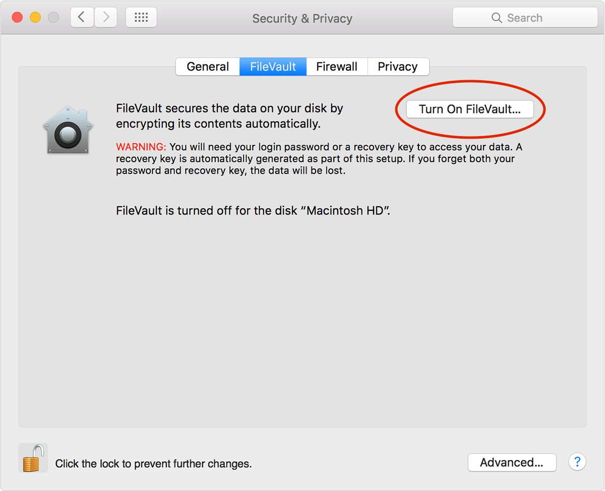
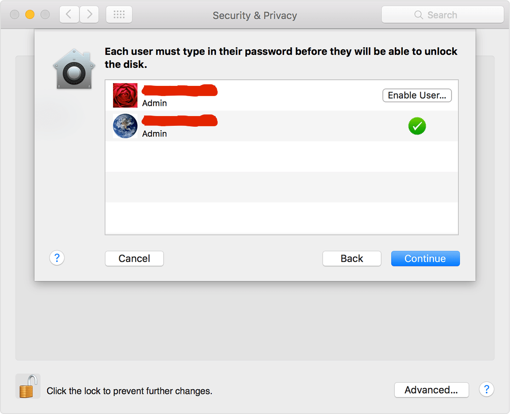
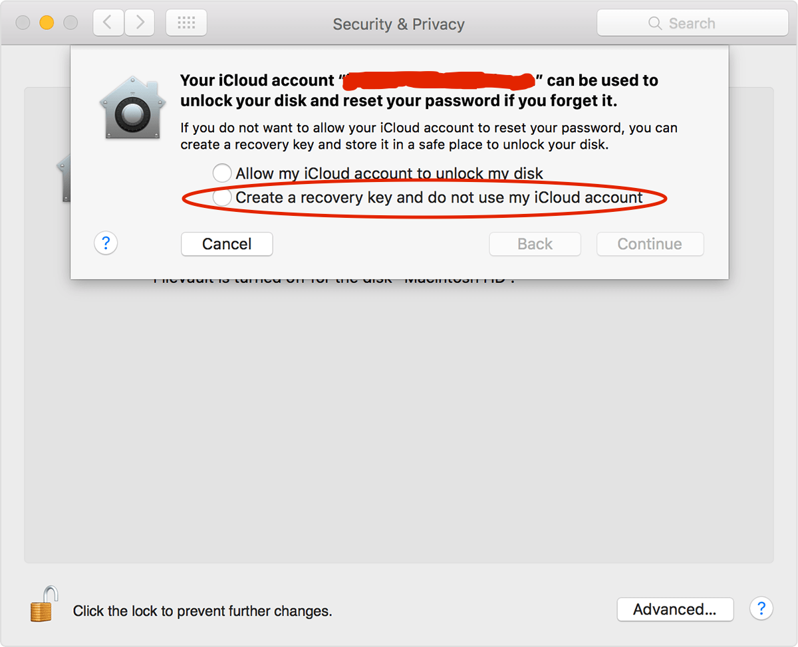
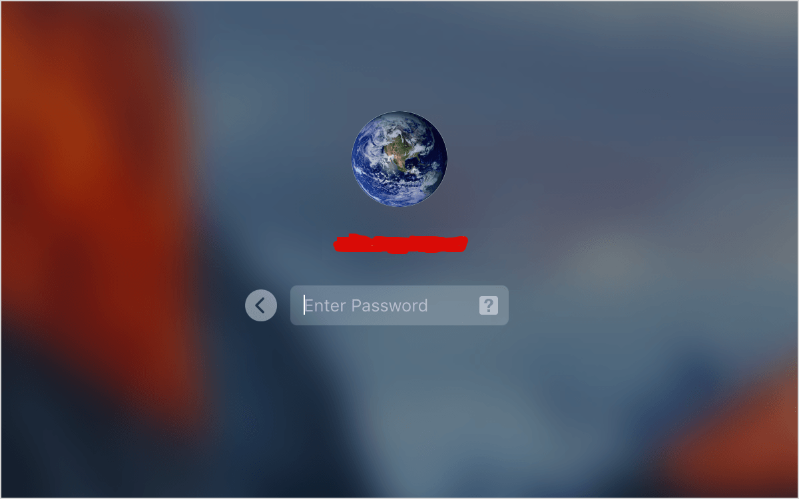
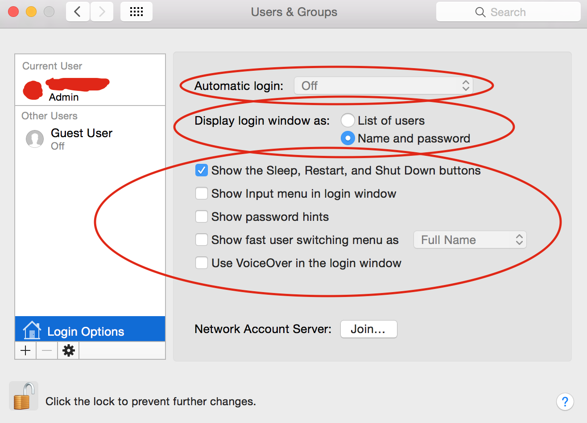
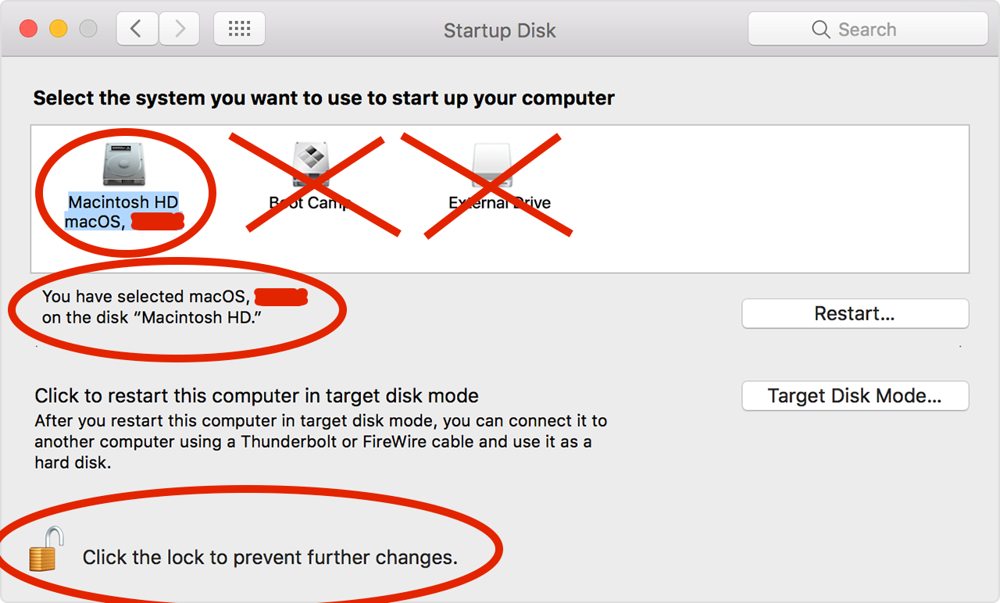
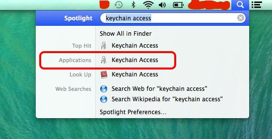
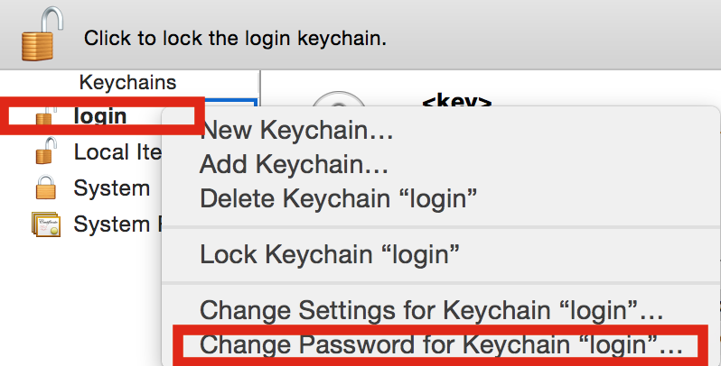
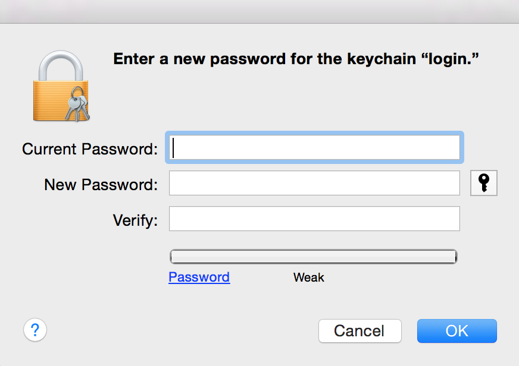
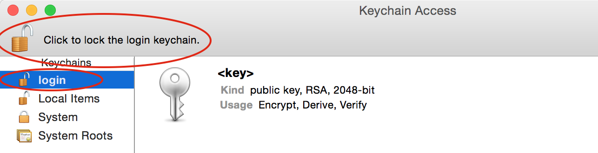

Enabling FileVault 2 Full Disk Encryption (With Hardening Modifications)
Turning on FileVault2 is simple.
- Click () menu > System Preferences > Security & Privacy.
- Click on the FileVault tab.
- Click on the Lock button and enter your admin username and password.
- Click on the Turn On FileVault button.

Weaken Attackers’ Ability To Unlock Encrypted Volume By Limiting The Number Of OS User Accounts On Computer
Do not enable additional user accounts which can be used and exploited to unlock the encrypted FileVault 2 volume.
Do not create more than one user account on the OS X computer.
An adversary with tremendous forensic capabilities will have a better chance of recovering one of the interested passwords. Hence, avoid deploying more than one FileVault 2 Password.

Create a Recovery Key
Create a local recovery key.
Never store a FileVault 2 recovery key with Apple.
Also, never allow your iCloud account to unlock your disk and reset your password.
If you make a stupid mistake and store the key with Apple or grant your iCloud account privileges, your adversary will ultimately win.

Retain a copy of the letters and number of the key and store it somewhere safe. Do not store the copy on your premises. If you store the physical copy on your premises, an adversary can forcibly enter and locate the copy.
When the FileVault 2 setup is done, your OS X computer will restart and ask you to log in with your account password.

The password unlocks your system’s disk. No account is allowed to log in automatically.
Do check that automatic login is off as this is absolutely essential.
To do this:
- Click () menu > System Preferences > Users & Groups.
While you’re checking, also display the login window as “Name and password”, untick “Show Input menu in login window”/”Show password hints”/”Show fast user switching menu”/”Use VoiceOver in the login window.”

Do not share the password with anyone else. Anyone that knows your password can turn against you whether willingly or unwillingly.
Everyone is an adversary. No one can be trusted.
Human error is the greatest vulnerability that is typically exploited by adversaries.
When the computer starts, the OS X startup disk’s encryption happens in the background when you use the Mac.
All new files that you decide to create are automatically encrypted.
Changing FileVault 2 Recovery Key
If you want to change the FileVault 2 recovery key because you suspect it has been compromised by an attacker, you may turn off FileVault 2 in the Security & Privacy preferences. Turn it back on again to produce a new key and deactivate all older keys.
Make Sure That Your Macintosh HD Disk Is Selected As The Startup Disk When Your Computer Starts
It’s important to ensure that your Mac boots up the Macintosh HD drive when it is turned on and not any other drive.
Also, make sure to click the lock icon to prevent further changes after selecting “Macintosh HD” as the drive to start up your computer.

Limit The Amount Of Startup Disks On Your Mac
It’s a good idea to not have another startup disk other than your “Macintosh HD.”
If there are additional startup disks on your computer, the attacker could attempt to boot into one of them. Hence, another start disk could be another attack vector.
You have to limit the attacker’s ability to penetrate your FileVault 2 whole disk encryption.
Change The Login Keychain Password To Be Different From Your User Account Password
The keychain on OS X is exceptionally important. It is a locked and encrypted container that stores sensitive information like account names and passwords for websites.
Any kind of malware and adversary will absolutely enjoy stealing all of that information in the container.
By default, the keychain on macOS is automatically unlocked when the user logs in. By changing the keychain password to be different from your user account password, the keychain will not automatically be unlocked during login.
Many attacks launched by adversaries require that the keychain is initially unlocked. Hence, it is imperative to change the keychain password to be different from your user account password.
The Keychain Access application can be found by going to:
- Macintosh HD > Applications > Utilities > Keychain Access.
Or if you’re lazy, go into your search bar that is located next to the clock on the upper corner right and type: “Keychain”

Right click on the login keychain and select: Change Password for Keychain “login”…

Make sure to enter a strong password consisting of mixed case/numbers/symbols that are randomly selected.
Make sure the new password is entirely different from your user account login password. Don’t write the password down. Memorize it.

Always Remember To Lock Your Login Keychain Especially When You Are Going To Put The System To Sleep
When you are not using the keychain, always lock it.
Don’t just remember to lock your login keychain, but actually do it.
When you are in the Keychain Access application, click on the lock icon to lock the login keychain:
